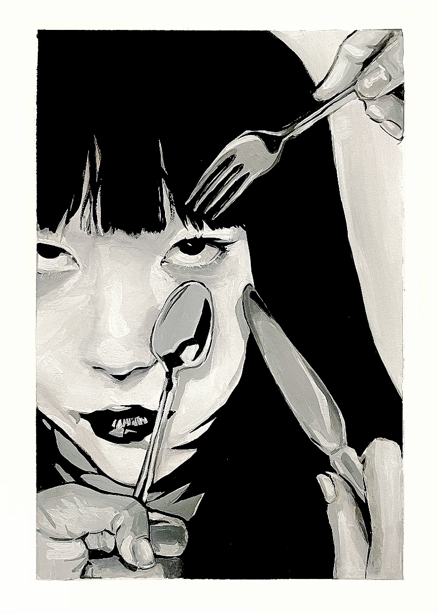
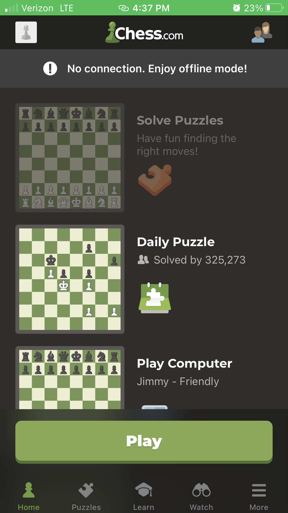
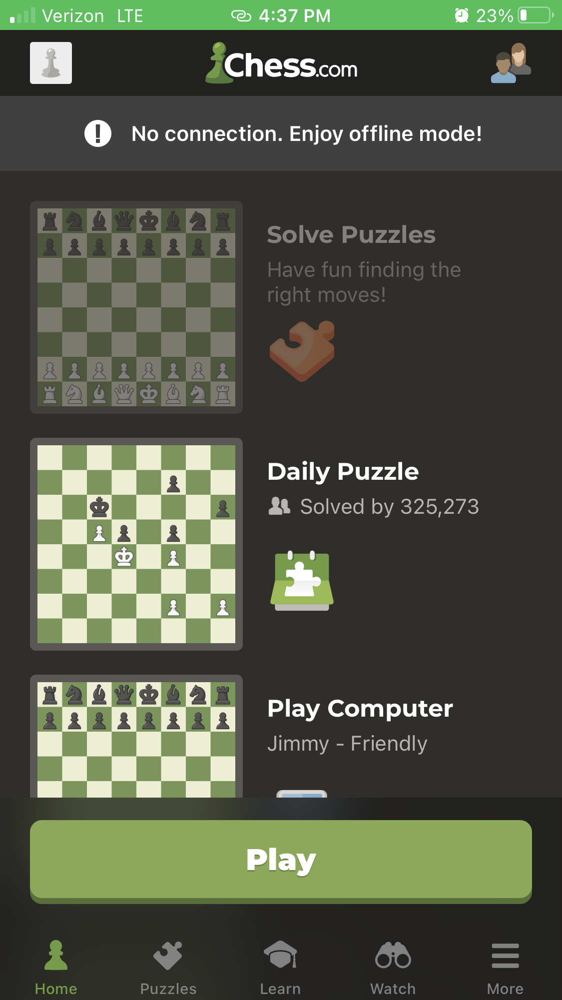

Before this article, I had not thought about the psychological aspect that goes into video game design. Dori speaks about how video game design has the power to “affect the human brain”. He mentions how video game designers have to consider everything from how people`s hands are positioned on devices to providing reward videos and pop-ups to boost users` joy. The layout of the design is articulated and calculated to have a specific outcome and to appeal to the user`s emotions.
My favorite tip that he included was the importance of sliders. Utilizing sliders allows you to maximize the screen space which is especially helpful on mobile games. Dori speaks of design methods that alert the audience to take action by indirectly telling them. For example, he mentioned partly visible borders that indicate that there is more information if the user slides the screen.
Studio 2 Image Analysis
Taken by Lauren Hong, 2022
My studio 2 will revolve around my artistic hobbies. This includes drawing, playing instruments, and dancing. Drawing has always been a part of my life. It is a source of comfort for me and has always been an outlet for me to relieve stress and feel happy. This summer I had the opportunity to go to Korea, AKA the motherland, by myself. This was such an important experience for me to grow as a person and get in touch with my roots. This particular photo is of a doodle I made in Korea. Throughout my time in Korea, I kept a sketchbook with me. On all of my solo adventures, I would take time to draw something. This was a way for me to capture memories of the places I visited.

Taken by Cindy Tan, 2023
This image is a piece made by my peer Cindy Tan. It is one of her artworks which she made for a class assignment. I absolutely love this image. On a photography level, the image is well-cropped and of good quality. The actual content of the image is beautiful. The visual complexity is high in this art piece. It clearly communicates Cindy`s unique artistic style. The use of facial expressions and the inanimate objects within the work make it more interesting. I would love to see this as a print. This image would be a perfect fit for the studio 2 prompt.
Seeing with a Child`s Eye and Thinking with an Adult`s wisdom
In Michael Gonchar`s article, 10 Intriguing Photographs to Teach Close Reading and Visual Thinking Skills, he provides 10 images and 10 tips to further your visual analysis capabilities. Some tips he mentions are to “be detectives”, “notice details”, and “practice regularly”. After reading this article, it reminded me of my job. I work at an elementary school, so I spend a lot of time with children between the ages of 4-12. Interacting with these kids, I realized that they already have the visual thinking skills Gonchar mentions in his article. As a child, you are much more observant and aware of everything around you. They notice all the little details, shapes, and colors around them, things that adults don`t pay attention to. I think as we grow up we lose this perspective on life. We lose our appreciation for what is around us. We grow numb to the nature around us, because as we get older, our obligations and responsibilities grow with us. In order for us to truly analyze with our eyes we have to remember the way we saw things as kids. We have to look at the nature, materials, and people around us with curiosity and fascination. In addition, we can utilize the wisdom and knowledge we have now to make cohesive and insightful conclusions to what we see.
For example, the website presented above is a beautiful example of using images to evoke a specific energy and theme. The website emmulates the lightness and light of water. The transitions and movements in the page demonstrate the fluidity, yet harmonious chaos of water. This demonstrates the companies awareness of the beautiful elements of water which shows the audience that their sink products prioritize providing the best water.
What are Modals and Do They Work?
A modal - also known as an overlay or dialog window - is a web element that is placed on top of a parent page that restricts any actions on the main page. This element is meant to “grab the user`s attention” and can have many different purposes. They can ask for user inputs such as a login window or show additional information about the main page.
Modals are used in both desktop and mobile devices. On desktop, they have specific anatomy and Baskanderi explains key principles that improve the modal design. On mobile, modals are harder to use due to the size restriction of the screen. Modal designs on mobile must be simple for them to be accessible and effective. The article also mentioned Accessible Rich Internet Applications (ARIA) which helps web applications be more accessible.
In Naema Baskanderi`s article, Best Practices for Modals / Overlays / Dialog Windows, she explains how people have become conditioned to immediately exit out of modals because they have built a reputation of being annoying and unnecessary. This is because of the excessive use of pop-up ads and sales marketing. This begs the question of whether or not modals can actually work. What design methods and choices can we make to make modals more effective and less irritating to the users?
How to Create an Effective Form
In Salim Ansari`s article, Best Practices for Form Design, he provides 20 principles to follow for better form usability and design. The 20 principles include…
Ansari gives a clear framework to create forms. The key points I took from this article are to first be concise and clear with your content and be consistent and mindful with your design. Forms should only ask for the most necessary information. Some easy tips to remember are to put the easiest information first such as name, contact information, etc., and to pay attention to the spacing and sizing of your design elements. Ansari recommends putting labels above the input boxes and providing a progress bar or visual to clearly communicate what you are asking and how many steps the form contains.
A website form that I think has an effective design in the 5 Love Languages site. On this site, you can take a quiz that will determine your love language based on 5 different love languages established by Gary Chapman, Ph.D. = author and counselor. The form is very accessible, there is clear contrast and the design is simple and consistent. There is also a progress bar that shows you how long the quiz will be and how far you`ve gotten. This makes the quiz more enjoyable and easier to take.


 


 Article: Best Practices for Modals / Overlays / Dialog Windows by Naema Baskanderi
Article: Best Practices for Modals / Overlays / Dialog Windows by Naema Baskanderi
 5 Love Languages Quiz
5 Love Languages Quiz